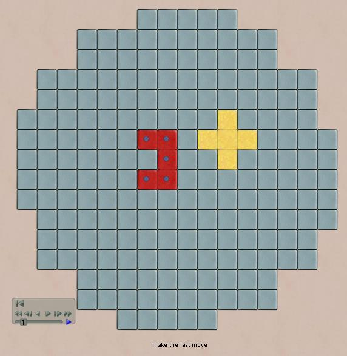

Universe and Pan-Kai
Universe is a
pentomino placement game invented by Alex
Randolph. Universe precedes the popular modern
game Blokus by 25
years. It looks very similar, and requires similar
perceptual skills, but it's a quite different
game. In universe, you can place anywhere
except you cannot
fence off an area smaller than 5 spaces. In effect,
any areas of size 6-9 become dead zones where no one can
play. The 2 player version, which is the oldest
pentomino game, is called Pan-Kai.
Rules: Players
take turns placing any of their pieces on any unoccupied
squares where it fits, except you cannot fence off an area
less than 5 spaces large.
Winner: is the last
player to place a piece.
Strategy: the
standard strategy is to try to create spaces with exactly 5
tiles, which fit one of your remaining pieces which your
opponents have already played. This effectively
reserves that space for you to fill later.
Robots:
Universe and Pan-Kai use a UCT random-playout robot.
The Pan-Kai version is adequate, but surprisingly, the same
logic seems a lot stronger when there are 3-4 players in
Universe.
|

|